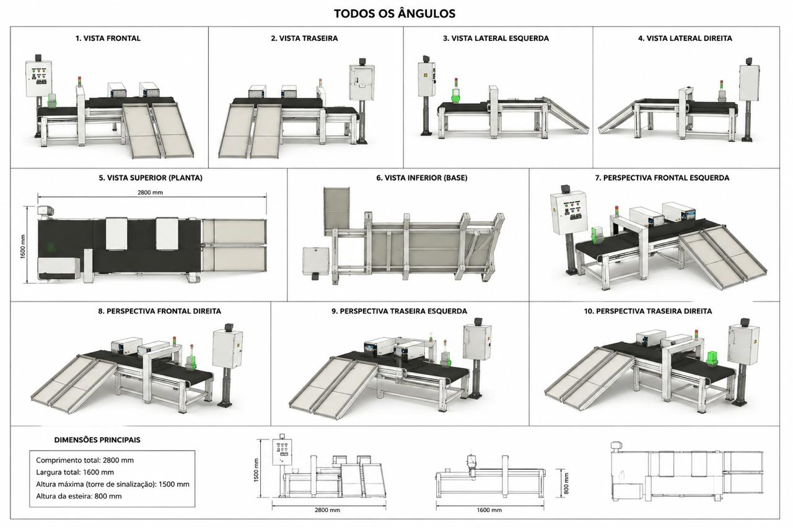

Galpão preparado
Espaço coberto e ventilado com piso impermeável para garantir armazenamento adequado.
Um sistema de organização, triagem e destinação correta que transforma resíduos em responsabilidade, segurança e oportunidade.
CONHEÇA AS APLICAÇÕESMateriais como óleo usado, recicláveis, tóxicos e itens sem reutilização podem ficar misturados. A proposta cria uma área coberta, ventilada, impermeável e corretamente sinalizada.
Espaço coberto e ventilado com piso impermeável para garantir armazenamento adequado.
Cada categoria recebe sinalização própria, evitando misturas e facilitando o controle.
Os resíduos seguem organizados até a retirada por empresas especializadas.

O projeto visual apresenta a esteira em múltiplos ângulos e demonstra como o equipamento apoia a separação dos materiais recicláveis.
Um fluxo simples reduz riscos e melhora o aproveitamento dos recursos.
Os resíduos chegam ao espaço de armazenamento.
Materiais são identificados conforme tipo e risco.
A esteira auxilia a organização dos recicláveis.
Coleta especializada leva cada item ao destino correto.
Veja as aplicações e a organização proposta para cada categoria de resíduo.